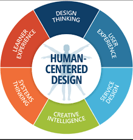

HCI also known as Human Computer Interaction is defined in this passage as the relationship between a person and their technology. From other sources it is described as the way in which human beings engage and interact with computer systems. In this field of study, it is also recognised that more attention is placed upon the design of the computers and how they garner interaction between the technology and humans.
As interesting as it is to learn about the definition of the HCI, there is still a remaining gap whereby we still don’t know how exactly the HCI is related to visualisation and interaction within data visualisation (Dimara & Perin, 2020)
In this blog post, I will summarise a reading we were given about defining what Interaction means for Data Visualisation by Dimara & Perin called What is Interaction for Data Visualization?. Furthermore, I will also give examples on what and how interaction of data visualisation is a key component of computers and design technology and how crucial it is that there is a correlation between these two. To achieve this, I will also use an article published on Unearth titled 9 Steps to Interactive Data Visualizations by Merica & Eagan
INTERACTION AND DATA VISUALISATION METHODS AND PROCESSES
In this reading, there are talks of methods of collecting data and input in order to capture the view of interaction in visualisation. There are a number of processes used to get this information which include a Methodology Rationale, Questionnaire, Paper Collection, Paper Tagging, and Summary Statistics (Dimara & Perin, 2020). Each methodology is a step that takes place in the process of generating a result that can be used to best understand how exactly we get input from interacting with visualisation.
I had a very hard time trying to understand what it was trying to say or the overall methodology process, so instead I turned to another article by Bryan Merica & Matthew Eagan titled 9 Steps to Interactive Data Visualizations that explained in detail how the previous steps mentioned are broken down into 9 steps that are easily digestible (Merica & Eagan, n.d.).
The article breaks down the methodology into 3 categories which the steps are listed under. These steps include: Available, Accessible, and Actionable (Merica & Eagan, n.d.). From what I have gathered, Availability is closely linked to researching and evaluating whether there is data to be gathered and what type of data it is. I link Availability to Methodology Rationale and questionnaire. I
. I say this because under Availability there is:
- Step 1: Identifying the goal or objective.
- Step 2: Understanding data limits.
- Step 3: Design Conceptual Model
Accessibility is data retrieval and processing, which is essentially the same thing as Paper Collection and Paper Tagging. This is the step in the process whereby the data is collected and sorted. Accessibility includes:
- Step 4: Source and Model Data
- Step 5: Designing the User Interface
- Step 6: Build Core Technology
The last step is Actionability. This section I can also say relates to the two previously mentioned steps which are Paper Collection and Paper Tagging. Actionability not only includes the resolution of the process but rather includes additional processing of data before a resolve, or in this case a Summary Statistic of the review
- Step 7: User Test and Refine
- Step 8: Launch to Targeted Audiences
- Step 9: Stay Updated
Of course these steps differ to the reading but the point is fairly still the same. The process is one that may have different methods but is used to tackle a similar problem to generate a similar resolve
HOW DOES THIS RELATE TO DESIGN TECHNOLOGIES AND HUMANS
To answer this question, I will mostly refer as to why I stated the process in the previous section. From my understanding of both articles and the topic at hand, the reason why this process is needed is to ensure that the correct information is utilised in order to create informative models that users can interact with.
From what we have been learning in this module so far, these articles highlight the importance of human based interactions and how we use this data along with environmental data to re-purpose the data into something human beings can interact with. The more you interact with something, the more you are able to learn from and about it.
Since we were using space based data in our last assignment, it was important for us to receive the information in order to mould and shape it into something that would be digestible for the next person. This process is crucial in order for the next person to be able to use the data we reformed.
In simpler terms, in order for humans to interact and relate to the design technologies and their systems, there must be visualisation that can allow interactivity which will be able to allow engagement between human and machine
A real life example of this process is the weather app. There are numerous weather based apps across all of our devices. These apps are not spawned out of nowhere. There is a team behind those apps that make sure information gets to you in a convenient way, and that convenience is due a number of micro teams that manage different aspects of the app that may seem inconvenient.
Within every large project or corporation these steps are applied. There is a team responsible for research that tackle the Availability steps of this process, who later give it to the marketing team or the team responsible for drafting out designs for systems and processes. Those people fall under both accessibility and actionability.
The people who actually process the data given and build the systems also fall under Actionability. All these steps taken are vital towards producing data that is interactable.
CONCLUSION
In conclusion, this blog post explores the relationship between Human Computer Interaction (HCI), data visualization, and the methodologies involved in understanding and harnessing interaction in this context. HCI is defined as the interaction between people and technology, a concept closely tied to data visualization's aim to enable effective communication between humans and complex data.
The post discusses the methodology used to capture and define interaction in data visualization, including steps like Methodology Rationale, Questionnaire, Paper Collection, Paper Tagging, and Summary Statistics. Furthermore, the post highlights the significance of human-based interactions in design technologies.
It stresses the importance of gathering and reformatting data to create interactive models that users can engage with effectively. This process is critical for bridging the gap between humans and design technologies, allowing for meaningful interaction and engagement
BIBLIOGRAPHY
- Dimara, E., & Perin, C. (2020). What is Interaction for Data Visualization? IEEE Transactions on Visualization and Computer Graphics, 26(1), 119-129. doi: 10.1109/TVCG.2019.2934283
- Merica, B., & Eagan, M. (2017, November 29). 9 Steps to Interactive Data Visualizations. Worth Reading